Private Vault · 个人保险库
创建独立的加密保险库，用只有你知道的主密码守护它。保险库数据放在你选择的目录里。
- 本地创建独立保险库
- 主密码保护，Argon2id 派生密钥
- XChaCha20-Poly1305 认证加密
Haven 是一款离线优先的个人文件加密与隐私管理工具。文件留在本地，加密由你掌控，无需云端，也不依赖网络。
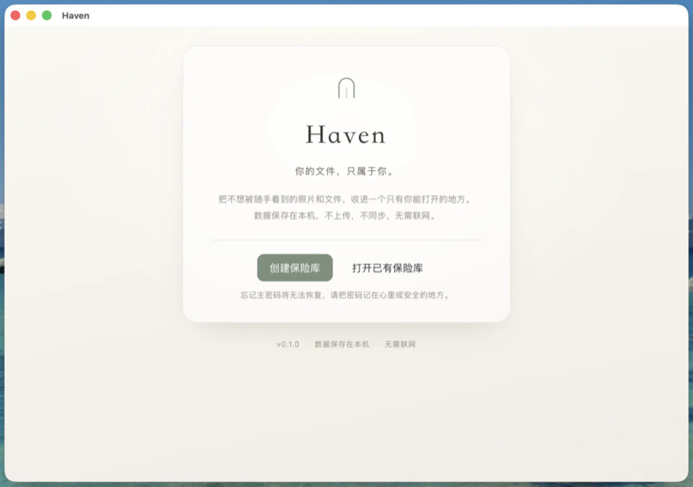
今天，我们的照片、文档和私人数据，散落在各种云盘、聊天软件、邮箱和 App 里。Haven 给你一个由你自己控制的本地加密空间——不上传、不同步、不需要登录、不需要网络。
Haven 的设计很克制：它不做云、不做账号、不做订阅。它只做一件事——把你已经散落在各处的文件，慢慢收进自己的加密抽屉。
没有服务器，没有 API，没有账号体系。你就是自己的云。
启动即使用，邮箱、手机、姓名一概不需要。
导入、加密、预览、备份，全部离线完成。
原文件保留在原位置，保险库不会把数据送去任何地方。
不会把文件悄悄复制到另一台设备。
Haven 做的事情不多，但每一件都认真完成。下面是当前版本实际实现的内容。
创建独立的加密保险库，用只有你知道的主密码守护它。保险库数据放在你选择的目录里。
把你已经散落在各处的文件，慢慢收进自己的保险库。
保险库里的文件，你知道在哪里、是什么。
Haven 会在内存里解密文件，你可以查看，它不会在磁盘上留下明文副本。
把整个加密保险库完整备份到另一块磁盘，或者恢复到新位置。
6 套内置主题即时切换，也可以导入自己的主题。主题系统与保险库完全隔离。
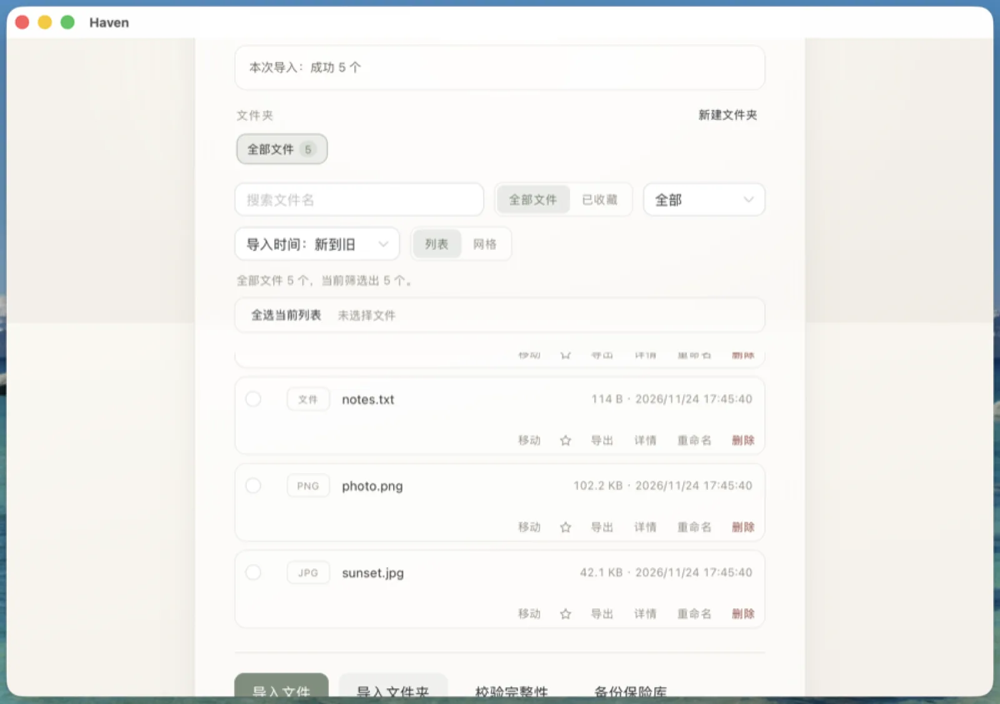
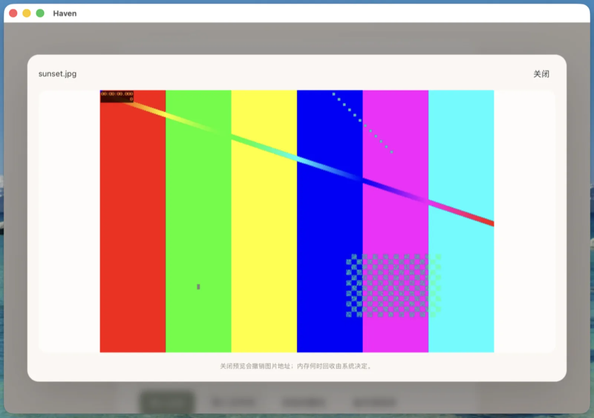
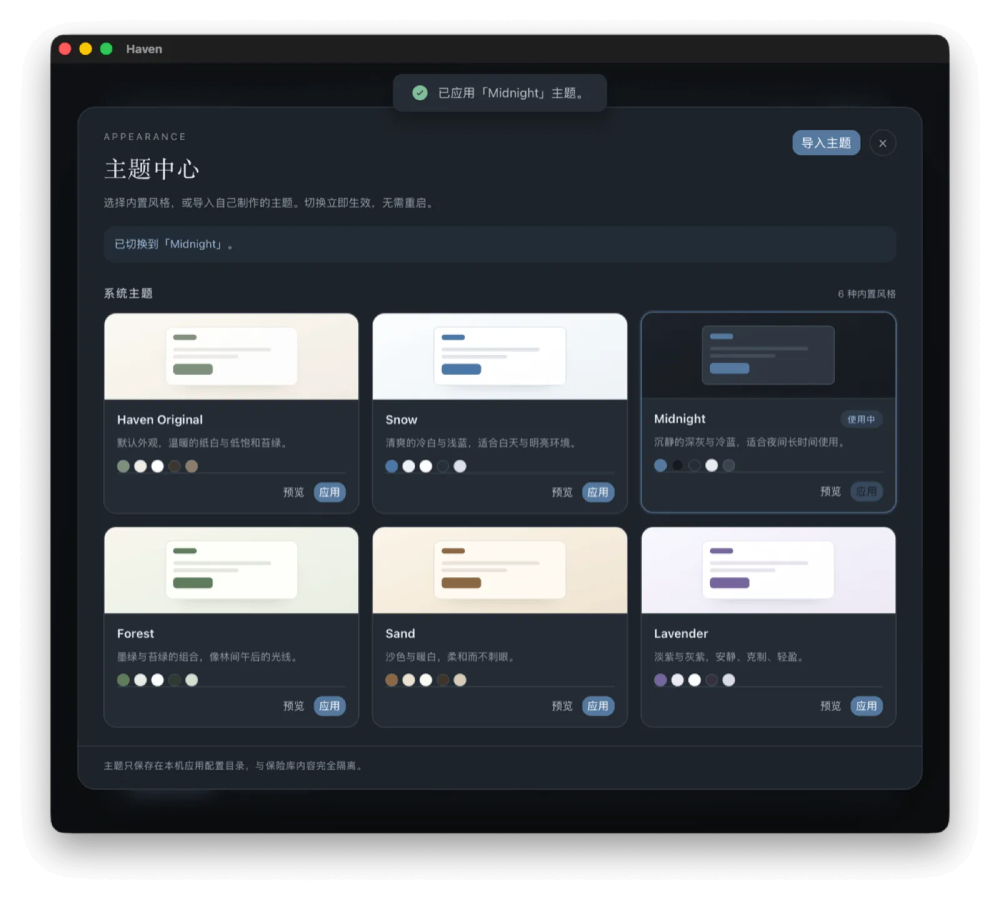
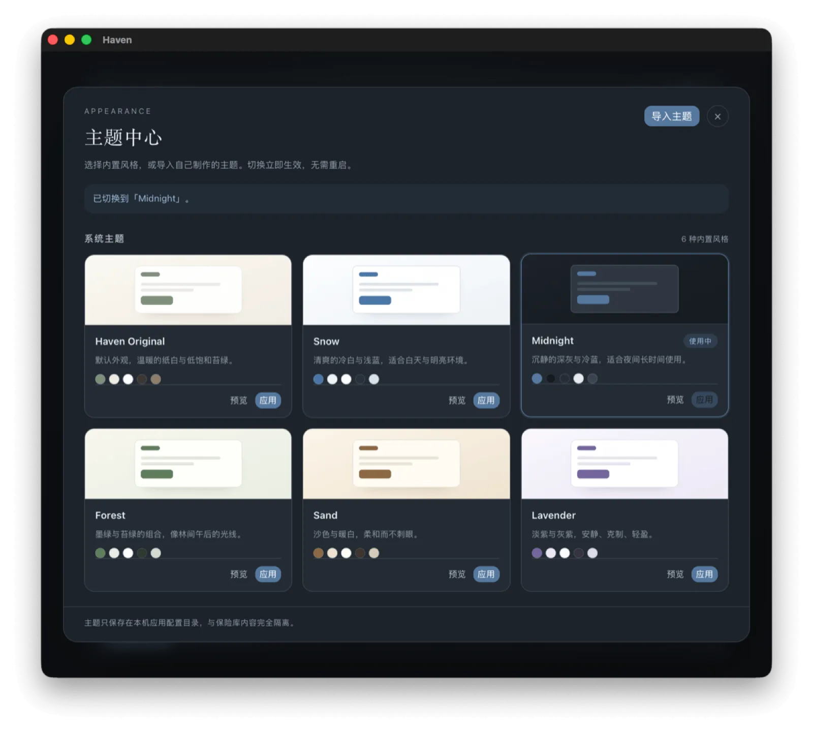
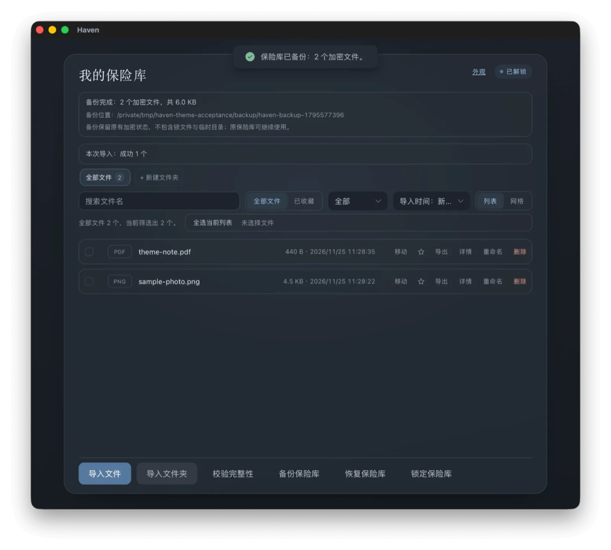
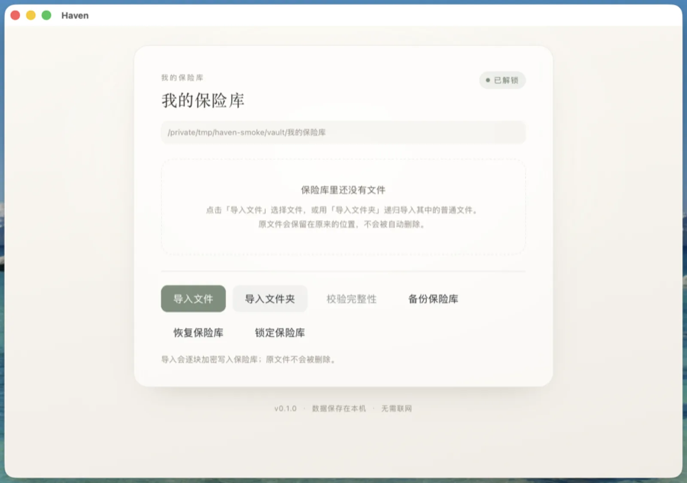
Haven 不替你保存密码，不替你上传文件，不替你托管密钥。它只是在你的设备上，认真完成加密、存储和解密这几件事。
从系统中选择或直接拖入。
主密码派生密钥，文件分块加密写入。
保存在你指定的保险库目录，不上传。
输入主密码，文件在内存中解密预览。
需要时导出明文副本，或整体备份加密保险库。
下面是 Haven 当前版本采用的实际设计。我们不声称已通过第三方审计，也不声称绝对安全。
256 MiB 内存、5 次迭代、每个保险库独立盐值。
主密钥、加密索引、分块文件全部使用 AEAD。
从主密钥派生出多用途加密块。
文件按块加密写入，避免完整明文一次性驻留内存。
主密钥只存在 Rust 后端内存；锁定或退出时 zeroize 清零。
Vue 前端只拿到状态、路径和错误码，不持有主密钥或派生密钥。
严格 CSP 禁止外部资源与网络请求；Tauri capability 最小权限。
以下是 Haven 当前版本在不同主题、不同状态下的真实截图。
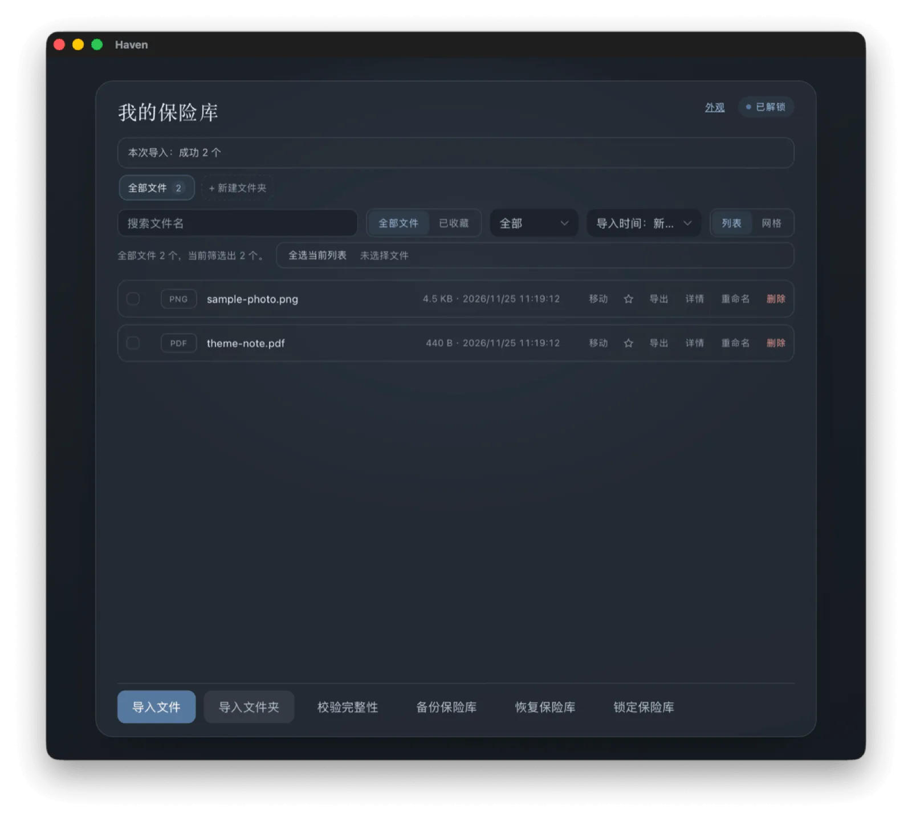
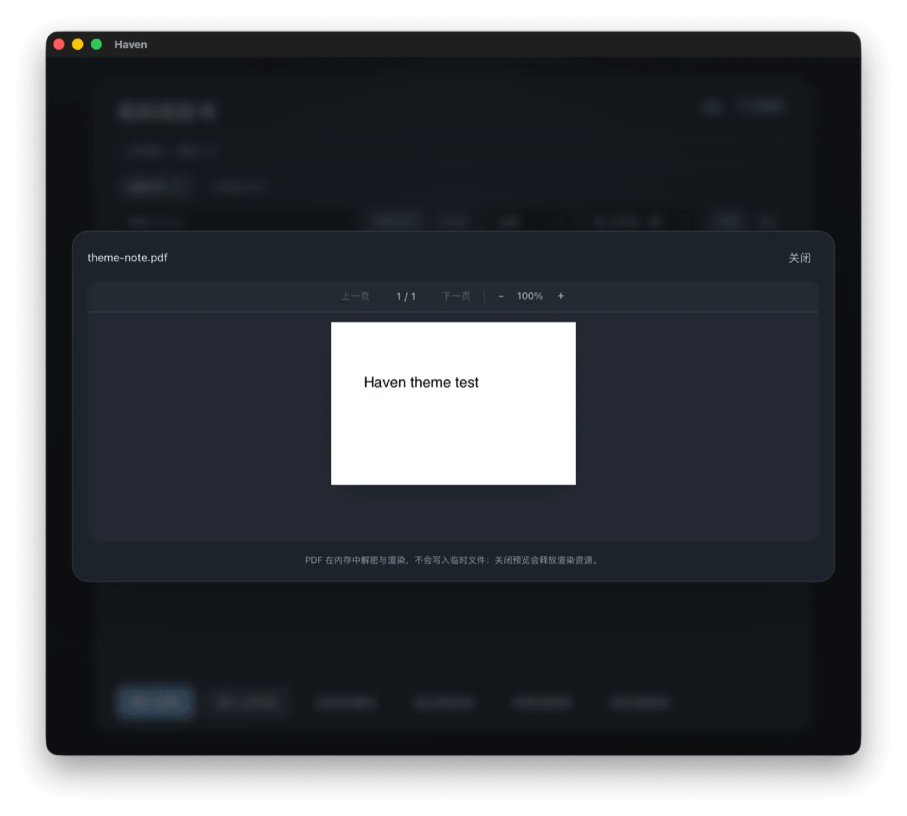
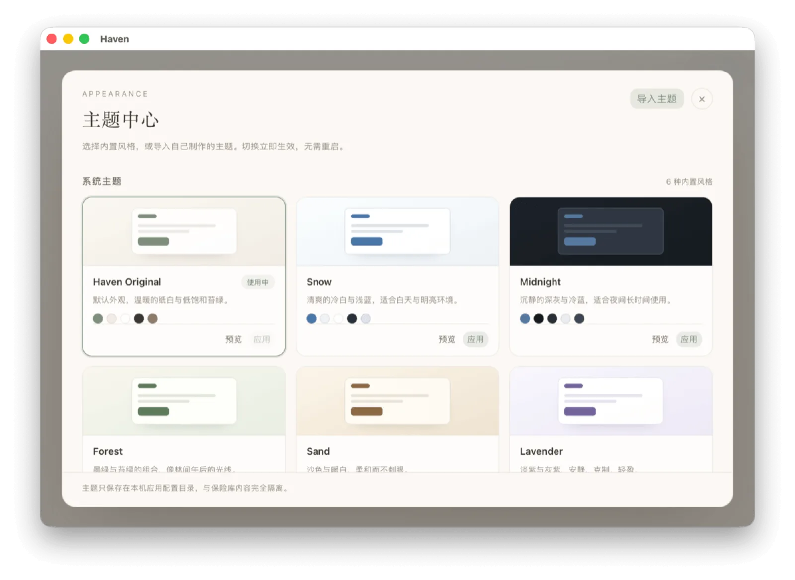
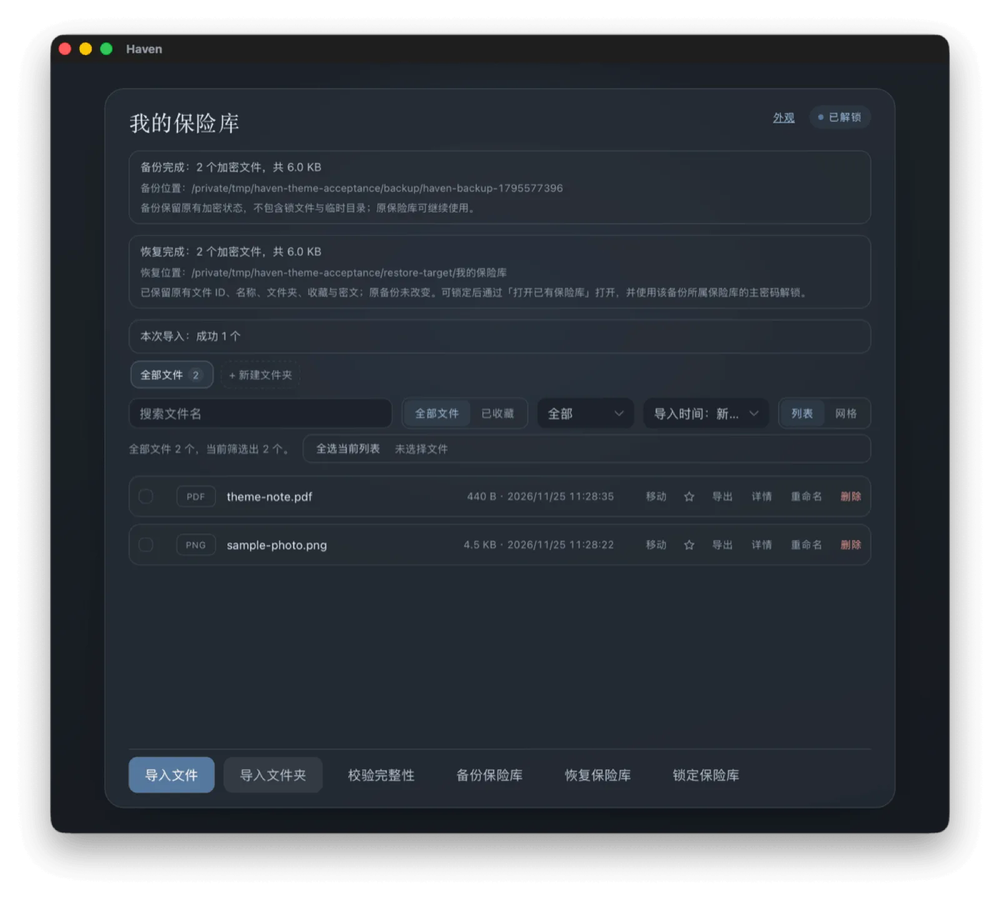
Haven 源代码公开，欢迎开发者阅读代码、提出建议、参与讨论，与社区共同改进项目。许可证尚未确定。
查看代码、提交问题、发起 Pull Request、跟进发布说明。
Haven 当前还在开发阶段，最新公开可用版本为 0.1.3 内部测试版。
macOS Apple Silicon（arm64）
v0.1.3